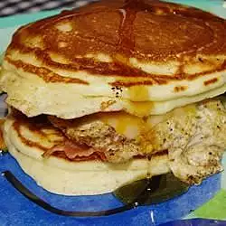

Leftover Pancake Breakfast Sandwich

A great way to use up leftover pancakes! We made this sandwich one weekend purely by accident. It's more of a knife-and-fork breakfast, rather than a eat-with-your-hands sandwich. There's room for lots of variation! I use the Buttermilk Pancakes II recipe for the pancakes.
Ingredients
- cooking spray
- 1 egg
- 1 slice ham
- 2 leftover buttermilk pancakes
- 1 slice Cheddar cheese
- 2 tablespoons maple syrup
Steps
- Heat frying pan over medium heat and lightly spray with cooking spray. Crack the egg into the pan and break the yolk. Cook the egg to desired firmness. Warm sliced ham in the pan while assembling sandwich.
- Toast pancakes in toaster and place one pancake on plate. Place egg on top of pancake. Pour 1 tablespoon of maple syrup over egg, place the cheese on top of egg, and a slice of warmed ham on top of the cheese. Top the sandwich with the second pancake and pour another 1 tablespoon of maple syrup over the top of the sandwich.